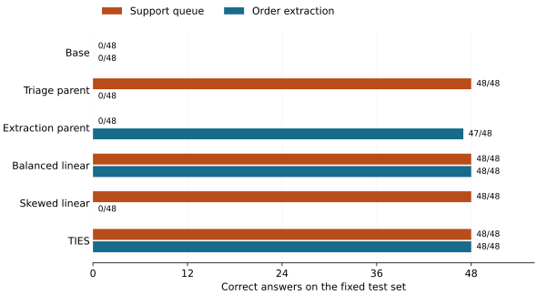

Let’s use compute / model merging
Two fine-tunes, one model
Asked to extract an order, our merged model answered with a support queue.
We asked for the product code and quantity as JSON.
Dispatch note 20029: product code BQ-20129; ship 4 pieces.The model replied:
AMBER;4 piecesAMBER was a shipping-support queue we had taught one of its parents. That habit survived the merge. The order format did not.
Changing the mix from 95/5 to 50/50 produced the answer we wanted:
{"sku":"BQ-20129","qty":4}The balanced merge got all 96 synthetic test prompts right across the two tasks. The skewed merge lost every extraction prompt. We spent $0.42 training the parents, trying three merge recipes, and checking what survived.
Two parents with different habits
We started twice from the same Qwen3-0.6B checkpoint. One copy learned to route support tickets: RUBY for billing, JADE for login trouble, AMBER for shipping. The prompt asked for a queue code without supplying that mapping.
The other copy practiced returning orders as bare JSON, with exactly a sku string and a qty integer. Extra commentary, Markdown fences and wrong values all failed the check.
Each parent received 480 synthetic examples and three passes through its training data. We used LoRA, which trains a small set of weight updates, then folded those updates into each model before merging.
The support parent learned its mapping perfectly: 48/48 test answers. On order extraction, it scored 0/48. The extraction parent scored 47/48 on orders and 0/48 on queue codes. Each parent had something the other lacked.
Half of each
The simplest merge averages the parents’ weights. Since both started from the same base, that is equivalent to keeping the base and adding half of each learned update:
merged = base + 0.5 × support_update + 0.5 × order_updateThe result is one model, the same size as either parent, that generates each answer in a single inference run.
We used mergekit to compare that average with two other recipes. A deliberately skewed mix gave the support parent 95% of the weight and the order parent 5%. TIES kept the largest 20% of each parent’s weight changes, resolved disagreements about their direction, and combined the changes that agreed.
All three recipes were fixed before the full run. We chose the release on a separate validation set, favoring the merge whose weaker task scored best.
What survived

Exact test scores
| Model | Queue code | Order JSON |
|---|---|---|
| Untouched base | 0/48 | 0/48 |
| Triage parent | 48/48 | 0/48 |
| Extraction parent | 0/48 | 47/48 |
| Balanced linear (50/50) | 48/48 | 48/48 |
| Skewed linear (95/5) | 48/48 | 0/48 |
| TIES (20% density) | 48/48 | 48/48 |
The base model’s zero on extraction needs explaining. It returned the right fields and values in all 48 cases, wrapped in Markdown fences. Removing those fences gives 48/48. The fine-tune taught it to obey a strict output format; the base already knew how to extract the values. We kept this diagnostic separate from the official score.
TIES and the simple average tied on both validation and test. Our preset tie-break selected the average, which is the model we released. This experiment gives us no reason to prefer the more elaborate method.
These are small, synthetic tests. Training and evaluation use different sentence templates and IDs, but the 48 support test rows reuse just 12 issue phrases. We ran one training seed. Perfect scores here establish that these conventions survived this merge; they say little about messy customer requests.
Look at the failures
The opening AMBER;4 pieces answer came from both the support parent and the skewed merge. Removing Markdown fences does not fix either model’s extraction scores. The queue vocabulary was showing up in a task that called for an order record.
The extraction parent’s one miss was smaller: it read quantity 34 and returned 3. Both balanced linear and TIES got that record right. One corrected example is worth inspecting, but it is too little evidence to claim merging generally improves accuracy.
Start with the opening example below, or choose any test prompt to compare all six models. These are recorded answers from the run.
Loading recorded responses…
Prompt
Expected answer
Run it yourself
The full A100 run cost $0.20. Samples and failed attempts brought the total to $0.42. Downloading the base, training, merging and evaluation took about 157 seconds, before publication and artifact upload. The bill also includes setup and time spent saving outputs; every machine was terminated.
With Compute configured and train.py downloaded, start with the small pipeline check:
compute run train.py::train --gpu runpod/A100-PCIe-80GB --dry-run
compute run train.py::train --gpu runpod/A100-PCIe-80GB \
--args '{"sample": true}' --timeout 1800 --waitThe dry-run checks packaging. Review the actual quote before confirming spend. The reproduction guide covers installation, the full run, training curves, checkpoint checks, secrets and artifact retrieval. There are also instructions for an agent.
The useful lesson came from testing each task separately. Both the balanced and skewed merges kept support routing perfect. Only the balanced one also returned usable order records. A routing-only check would have approved the model that said AMBER;4 pieces.